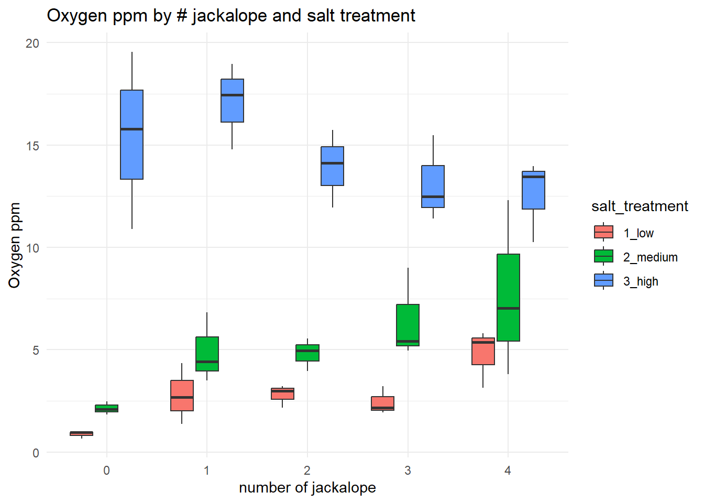
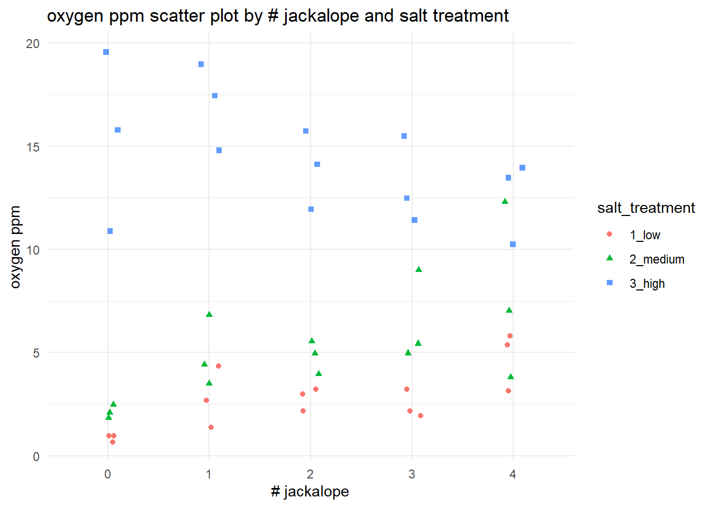
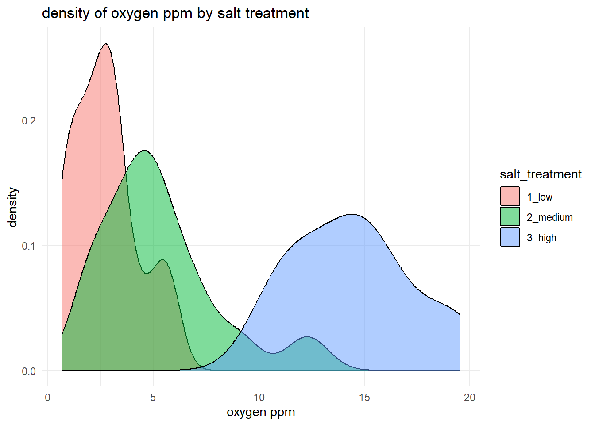
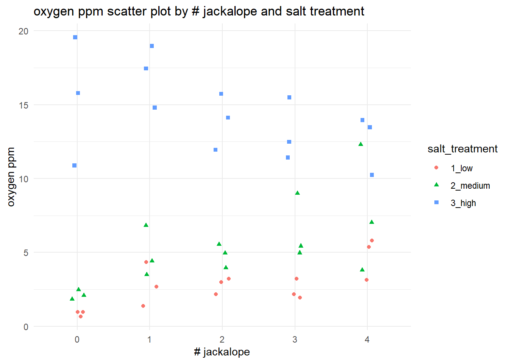
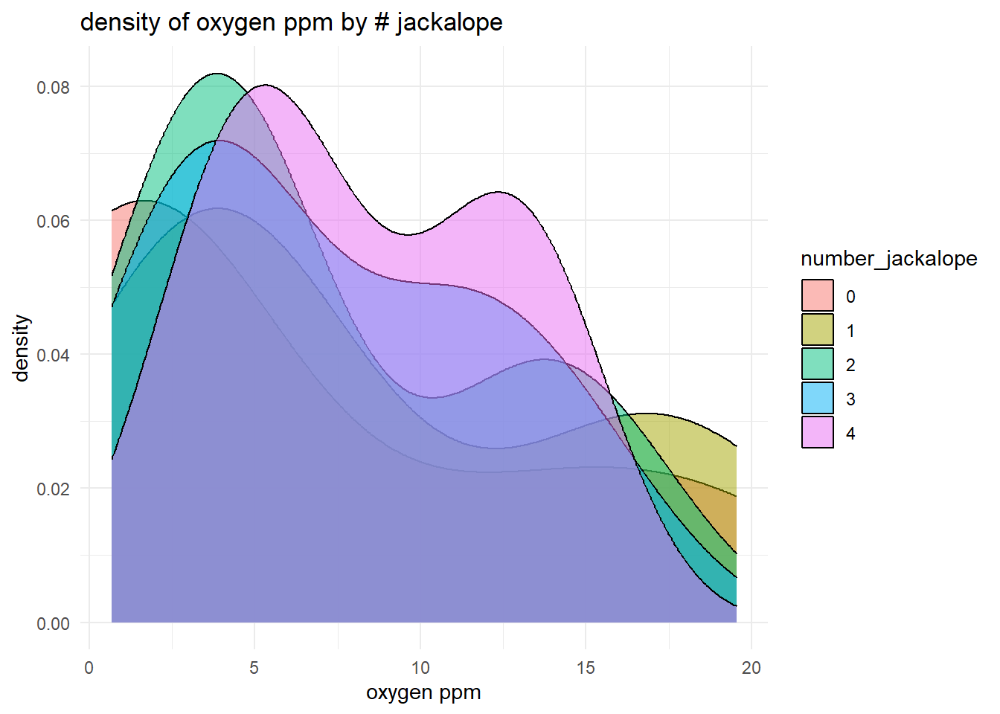
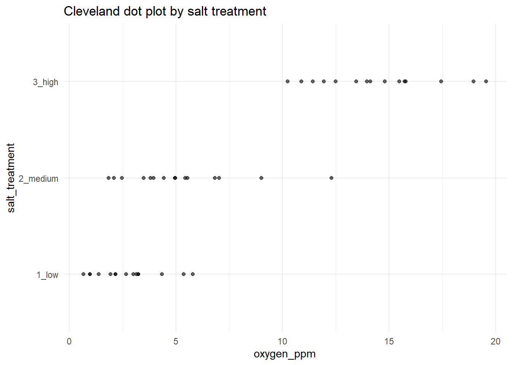
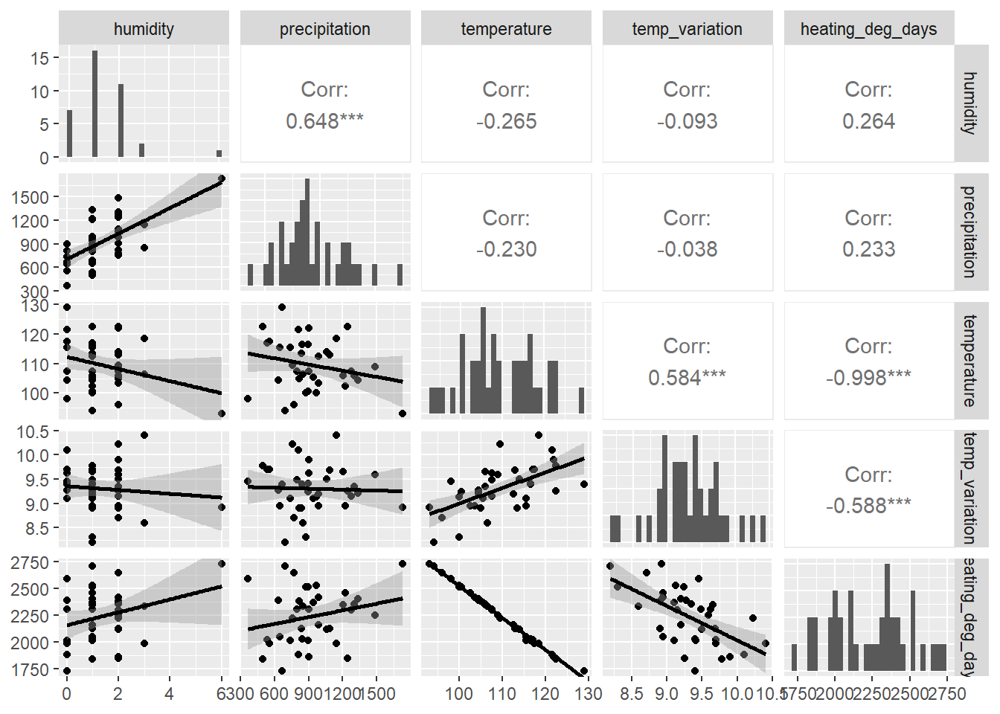

source("class_r_scripts/load_packages.r")18 Tutorial: Data Exploration
18.1 Tutorial: Data Exploration
In the tutorial below, you will witness some common approaches to examine datasets for outliers and multicollinearity. Some of these have severe limitations, which will be explained. The primary takeaway from this initial approach is that there is not a single, optimal recipe for understanding all the issues with your data prior to analysis. The process of discovery is iterative across several parts of your workflow. So, just be patient with this first step.
NoteWhat to expect from future tutorials
In future weeks, you will be given a similar tutorial (with a very simple worked example) to work through on your own prior to class. In-class sessions will be used to answer questions pertaining to (1) the exercise itself and (2) the application of the tools and approaches to your own dataset.
18.2 Workspace set-up
You are free to organize your R Project folder in whatever way works best for you, as this course imposes very little file-structure overhead. One simple option is to create a subfolder such as data/class_exercise_data (using the dir.create("data/class_exercise_data") command to hold any example files used in class. If you need a refresher on project setup and organization, refer back to the Preparing Yourself section from Week 1.
First, load the required packages by sourcing the file below. There a number of ways to do this (I have noticed several ways that different labs at UW do this, and that is more than acceptable). For your convenience, I have provided the following file (click to save; you may need to add the .r extension manually):
Place this file into a folder called class_r_scripts (just a recommendation!).
You should include this sourcing step at the beginning of all independent R scripts. The exception is if and when you use a formal reproducible analysis workflow packages (e.g. the targets package) or you need Quarto, which requires that you load packages and their dependencies in another way. This will require removing the source function below.
NoteThe
tidyverse meta-package in R
Keep in my that the tidyverse package in R is a meta package and contains many standalone R packages, including:
ggplot2: declarative construction of statistical graphicsdplyr: relational and vectorized data manipulation operationstidyr: restructuring datasets into tidy (rectangular) formreadr: standardized, high-performance import of tabular datapurrr: functional programming utilities for iterative workflowstibble: enhanced data-frame representation with explicit printing semanticsstringr: consistent, vectorized string processingforcats: handling and releveling of categorical variables
18.3 Our dataset: Impacts of mud-dwelling jackalopes on dissolved oxygen
These data for this exercise come from a totally absolutely real experiment on a newly discovered species of jackalope, Lepusantilocapra pelonates (“mud-dwelling jackalope”). Researchers observed that mudflats with higher densities of L. pelonate’s tended to have higher dissolved oxygen. At the same time, nearby forest salt licks provided salt that varied naturally across time and space, and L. pelonates were frequently observed foraging at them.
To test whether jackalope density and salt availability had causal effects on dissolved oxygen, the researchers constructed artificial mudflats and experimentally varied the number of L. pelonates (0–4 individuals) and salt availability (low, medium, high). Each unique combination was represented by a single mudflat, and dissolved oxygen was measured at each site. These are the data from that totally real experiment.

To do these exercises on your own, you will need the following files (simply click to save):
Place the data files into your class_exercise_data folder.
Let us read in these data and save it to an object called d (for “data”). Yes, according to best practices for naming, this could have a more informative name. Because this is (a) a singular dataset for a simple analysis, and (b) a simple class example, we will use a shorthand to prevent some extra keystrokes. But just know this is technically very bad practice. Also, for the sake of streamlining this example, this file has no associated metadata (this will be shown later when we get to the modeling phase). Already, we are flawed programmers. Let us move forward and try to forget these incidents.
d <- read.csv("class_exercise_data/lepusantilocapra_pelonates_experiment.csv")This was a successful (and very simple) data ingestion. (Again, there are many ways to ingest data, so use whatever you are most comfortable with.)
18.4 Applying the Data Exploration Toolkit
As you recall, we have the following steps of the ante hoc Data Exploration Toolkit:
- Tool #1: Assess potential outliers (univariate and multivariate)
- Tool #2: Assess the presence of excess zeros
- Tool #3: Explore interactions and structural relationships
- Tool #4: Assess potential information redundancy among covariates (e.g., multicollinearity)
- Tool #5: Decide whether covariate standardization is warranted
The good news is that we can generally combine the first three steps by simply looking at the overall structure of your dataset in several ways. These “ways” are non-prescriptive; you should continue to explore until you understand all the dimensions of your raw data. Let’s begin!
18.5 Basic examination of broad-scale data structure
First, we need to check the data types that were imported; this is a critical first step, as this can let you immediately detect any red flags. Though the str() (or the glimpse() function) is good for initial checking:
str(d)'data.frame': 45 obs. of 3 variables:
$ number_jackalope: int 0 0 0 1 1 1 2 2 2 3 ...
$ salt_treatment : chr "1_low" "1_low" "1_low" "1_low" ...
$ oxygen_ppm : num 0.67 0.97 0.97 2.67 1.37 4.35 3.23 3 2.17 3.23 ...We note that number_jackalope is an integer. We could certainly keep it like this, but, given how few categories there are (and the fact that this was an experimental condition), we decide that it is best to convert it to a factor.
d <- d |>
mutate(number_jackalope = factor(number_jackalope )) |>
mutate(salt_treatment = factor(salt_treatment))
WarningDigression about
base versus magrittr/tidyverse pipes
Note that the native pipe operator |> was used in the above tidy code snippit.
| Feature | |> (base R) |
%>% (magrittr / tidyverse) |
|---|---|---|
| Introduced | R 4.1.0 (base R) |
Earlier (via **magrittr**, widely adopted by tidyverse) |
| Requires package | No | Yes (library(magrittr) or library(tidyverse)) |
| Default recommendation | Preferred going forward | Legacy / tidyverse-centric |
| Placeholder support | No implicit placeholder | Supports . placeholder |
| Example placeholder use | Not possible | df %>% mutate(x = . + 1) |
| Anonymous functions | Uses \(x) syntax |
Uses . or {} blocks |
| Example | x |> mean() |
x %>% mean() |
| Readability (simple pipelines) | Very clean | Very clean |
| Readability (complex pipelines) | Can become verbose | Often clearer due to . |
| Compatibility with older R | Requires R ≥ 4.1 | Works in older R |
| Debugging / tooling | Excellent (native) | Excellent |
| Performance | Slightly faster (base) | Slight overhead (negligible) |
| Teaching clarity | Emphasizes base R | ️ Adds extra abstraction |
| Future-proofing | Yes | ️ Likely to persist but not expand |
| Works with tidyverse verbs | Yes | Yes |
You can then run str(d) or glimpse() again to see this change.
18.6 Data structure: visualizing variation within and among groups
Let us now examine how the treatments and the response variable are structured and if there are any statistical outliers. There are many approaches to this, and most of these formal outlier tests (Grubb’s test, Dixon’s Q test, and Rosner’s test) are based on the condition of dat normality. As such, they have context-dependent performance; that is, they fail at low sample sizes and have variable ability to detect outliers dependent on sample size. If you want to use these tests despite these weaknesses, you can find them in the EnvStats and outliers packages.
It is important at this step to avoid making any inferences about the relationships. As far as you, the responsible data analyst, are concerned, there are no relationships. You are simply looking for anything odd in the dataset: spurious datapoints, data outside the range of data (though you could use the range() function to see this), etc. Let us conduct a simple examination using one tabular and six graphical approaches:
- Step 1: Simple
summary - Step 2: Boxplot (Tukey-style)
- Step 3: Violin plot
- Step 4: Scatterplot
- Step 5: Density plot
- Step 6: Heatmap
- Step 7: Interaction plot
18.6.1 Simple summary and examination of data structure
summary(d) number_jackalope salt_treatment oxygen_ppm
0:9 1_low :15 Min. : 0.670
1:9 2_medium:15 1st Qu.: 3.000
2:9 3_high :15 Median : 5.370
3:9 Mean : 7.456
4:9 3rd Qu.:12.300
Max. :19.560 This returns information about range, median value, and sample size within groups. Use this first to discover any major issues.
You can then graphically view aspects of your raw dataset. So, let us create a few plots using the ggplot2 package. Please refer to the ggplot2 Cheat Sheet (right click for download) for more information about this.
TipA recipe for a
ggplot2 visualization
Use the ggplot2 Cheat Sheet (right click for download) and find the appropriately useful arguments to replace the angle bracketed (< >) sections (that is, remove the angle brackets in your final code).
data |>
ggplot(
aes(x = <x_variable>, y = <y_variable>, <optional_aesthetic> = <variable>)
) +
geom_<geometry>(<geometry_options>) +
labs(
title = "<plot title>",
x = "<x-axis label>",
y = "<y-axis label>",
<other_labels>
) +
theme_<theme_name>() +
<optional_additional_layers>This follows the Grammar of Graphics (GoG) approach introduced by Leland Wilkinson in 1999. All the verbiage (e.g. facets, aesthetics, geometry) was then used as the basis for the first ggplot version by Hadley Wickham in 2007 (first book published in 2009; now available online). Wilkinson’s book on graphical theory is a great read and a great example of how to develop a set or irreducible guidelines for a seemingly complex system.
18.6.2 Boxplot (Tukey-style)
For Step #1 of our Data Exploration Toolkit, we can start the process of identifying potential univariate outliers by using a Tukey-style boxplot for visual inspection. The following code takes our dataset (d) and then sends it forward to the ggplot function. As you read on the Cheat Sheet (linked above) and the brief recipe in the callout box above, you need to set what is called an “aesthetic” (abbreviated to “aes” in the function) that contains what you want to be your x and y variables. You can also set the fill color to vary by salt_treatments too. Then, the next lines add some axis and graph labels and set a theme (i.e. changes colors of the whole plotting area).
d |>
ggplot(aes(x = salt_treatment, y = oxygen_ppm, fill = salt_treatment)) +
geom_boxplot() +
labs(title = "Boxplot by salt treatment", x = "salt_treatment", y = "oxygen_ppm") +
theme_minimal()
18.6.3 Cleveland Dot Plot
This is another simple way of visualizing potential outlier. Fancy name; unfancy visualization.
d |>
ggplot(aes(x = oxygen_ppm, y = salt_treatment)) +
geom_point(alpha = 0.6) +
labs(
title = "Cleveland dot plot by salt treatment",
x = "oxygen_ppm",
y = "salt_treatment"
) +
theme_minimal()
Now, what can be said about potential outliers? In our boxplot, we see two black dots each group that seem to be outside of the normal range of those groups. These are potential outliers. You should go back and examine these datapoints to see if there is anything strange about them. But be aware of how Tukey-style boxplots calculate outliers; it can be misleading if you do not understand Tukey’s original approach. Let us also examine the boxplots by different L. pelonates densities (i.e. the jackalope density treatments):
d |>
ggplot(aes(x = number_jackalope, y = oxygen_ppm, fill = number_jackalope)) +
geom_boxplot() +
labs(title = "Boxplot by number of jackalope", x = "number_jackalope", y = "oxygen_ppm") +
theme_minimal()
The Tukey boxplot is not showing any black “outlier” dots in the groups. So, using this approach, there do not seem to be any structural outliers. You can repeat this process on every variable in your dataset. It is generally effective for flagging major issues (anomalous values, etc.). Most likely, however, this approach will flag values that end up being perfectly reasonable. That is more than acceptable. At the very worst, you have put your eyes on the dataset a few more times.
18.6.4 Violin plot
A violin plot visualizes distributions using a mirrored density plot. As such, the default is to extend the density profile past the data boundaries. This feature can be suppressed by setting the trim argument in the geom_violin to FALSE.
ggplot(d, aes(x = number_jackalope, y = oxygen_ppm, fill = salt_treatment)) +
geom_violin(trim = FALSE) +
labs(title = "distribution of oxygen ppm by # jackalope and salt treatment",
x = "number of jackalopes",
y = "oxygen ppm") +
theme_minimal()
Because violin plots do not explicitly show outliers, they may be worse in some ways than Tukey-style boxplots for visual data exploration. Furthermore, violin plots may be harder to interpret than boxplot, may be space-inefficient (in terms of Edward Tufte’s well-known argument for reduced non-data ink in visualizations), and may smooth over important details of the data (i.e. it’s difficult to visually assess the location of the 25th and 75th percentiles, if that is something you are accustomed to). Violin plots also can be misleading, especially with small sample sizes. Use them, but think critically about what information they are providing.
18.6.5 Scatter plot
Do not overlook the utility of simple scatterplot. A scatterplot is useful for seeing the raw relationship between a predictor and a response across treatments. It helps you assess overall trends, clustering, and potential outliers while keeping individual observations visible.
ggplot(d, aes(x = number_jackalope, y = oxygen_ppm, color = salt_treatment, shape = salt_treatment)) +
geom_jitter(width = 0.1, height = 0) +
labs(title = "oxygen ppm scatter plot by # jackalope and salt treatment",
x = "# jackalope",
y = "oxygen ppm") +
theme_minimal()
18.6.6 Density plot
A density plot is very useful for quickly comparing the overall distribution of a response variable within or between groups. It helps you see differences in spread, skewness, and overlap between treatments that may not be obvious from summary statistics alone.
ggplot(d, aes(x = oxygen_ppm, fill = salt_treatment)) +
geom_density(alpha = 0.5) +
labs(title = "density of oxygen ppm by salt treatment",
x = "oxygen ppm",
y = "density") +
theme_minimal()
For our example, this approach gives us a good idea of the relative spread of each of salt_treatment response. We can also produce the same plot, but we could split it by jackalope treatment instead. (In this case, it’s a bit messy.)
ggplot(d, aes(x = oxygen_ppm, fill = number_jackalope)) +
geom_density(alpha = 0.5) +
labs(title = "density of oxygen ppm by # jackalope",
x = "oxygen ppm",
y = "density") +
theme_minimal()
18.6.7 Heatmap
d |>
group_by(number_jackalope, salt_treatment) |>
summarise(mean_oxygen = mean(oxygen_ppm), .groups = "drop") |>
ggplot(aes(x = number_jackalope, y = salt_treatment, fill = mean_oxygen)) +
geom_tile() +
scale_fill_gradient(low = "lightblue", high = "darkblue") +
labs(title = "heatmap: mean oxygen ppm by # jackalope and salt treatment",
x = "number of jackalope",
y = "salt treatment",
fill = "mean oxygen ppm") +
theme_minimal()
18.6.8 Interaction plot (Step #3)
Step #3 of our Data Exploration Toolkit is to examine our interaction structure. A simple interaction plot is useful for getting a quick, visual sense of whether the relationship between a predictor and a response might change across levels of another factor. By faceting the same boxplot across salt treatments (i.e. creating “small multiples” sensu Edward Tufte), you can more easily compare both the typical oxygen levels and the spread of the data for each jackalope count within each treatment. This does not test for an interaction, but it is a fairly good reality check for overall patterns –such as shifts in medians or changes in variance– that might justify including an interaction term later on.
ggplot(d, aes(x = number_jackalope, y = oxygen_ppm)) +
geom_boxplot() +
facet_wrap(~salt_treatment) +
labs(title = "Oxygen ppm by number of jackalopes across salt treatments",
x = "# jackalope",
y = "oxygen ppm") +
theme_minimal()
This is not particularly useful for detecting data anomalies, but it could be useful for helping you understand where data may be sparse (i.e. low sample sizes) or where there may be missing combinations of treatments (which can lead to lack of model convergence).
18.7 Inspecting for multicollinearity (Step #4)
The jackalopeologists then conducted a preliminary quantification of the climate in which L. pelonates was found. They used remote sensors to measure humidity, precipitation, temperature, temperature variability, and heating degree days. We don’t think we can include all the variables in our statistical model, so we want to first inspect if any of the variables are correlated (i.e. they tell us redundant information). Let’s read in these climate data and save it to an object called “climate”:
climate <- import("class_exercise_data/lepusantilocapra_climate_data.csv")And then look at the structure of the data:
str(climate)'data.frame': 37 obs. of 5 variables:
$ humidity : int 1 1 3 1 1 0 2 0 3 0 ...
$ precipitation : int 692 874 852 990 650 741 1301 368 1148 669 ...
$ temperature : num 94 100 106 112 116 ...
$ temp_variation : num 8.2 8.3 8.6 9.2 8.95 9.1 9.35 9.45 10.4 9.4 ...
$ heating_deg_days: num 2710 2514 2334 2156 2048 ...Normally, we would have the associated metadata so that you could see the units for each of these variables. For this example, the units are not important.
We will proceed to visually examine multicollinearity (correlation) between these climate metrics, but we will also include–as a basic measure of strength of any correlation– the Pearson correlation metric. Let’s use a pairwise plot to visually inspect these. Note that the correlation coefficient (which varies between 0-1) is on the opposite diagonal from the graph.
climate |>
ggpairs(
upper = list(continuous = "cor"),
lower = list(continuous = "smooth"),
diag = list(continuous = "barDiag")
)
# "upper" = Show Pearson correlation coefficients in the upper panel
# "lower" = Optionally show scatterplots with smoothing in the lower panel
# "diag" = Optionally show histograms on the diagonalThe GGally::ggpairs function markedly improves upon similar functionality of base R. What do we see? We see that:
- humidity and precipitation are strongly and positively correlated (r = 0.648)
- temperature and temperature variation are strongly and positively correlated (r = 0.584)
- temperature and heating degree days are strongly and negatively correlated (r = -0.998)
- temperature variation and heating degree days are strongly and negatively correlated (r = -0.588)
So, what to do, what to do, what to do? The next part is one solution to this issue. We clearly have some variables that might be providing redundant information. This could impact our modeling (specifically inflating the variance of a given regression coefficient). We can explicitly examine this using Variance Inflation Factors (VIFs), which are calculated for each term in a model. Note that there are options for VIFs applied to both continuous and categorical variables. Let us do this for continuous variables for these climate data. Most available functions in R require regression models; however, there are some approaches–such as the usdm package–that require only data frames of multiple variables. So, let us use that.:
vif_results <- usdm::vif(climate)
vif_results Variables VIF
1 humidity 1.774591
2 precipitation 1.764116
3 temperature 244.453457
4 temp_variation 1.555291
5 heating_deg_days 246.129937This is a clear example that two variables, temperature and heating_deg_days, are highly correlated with a number of other variables. That is, they potentially provide redundant information.
If variables are negatively correlated, consider retaining them both. From there, you can decide to:
- Eliminate one of the positively correlated variables from our analysis.
- Conduct a factor-reduction analysis to create a new variable that captures the correlated variation between correlated variables.
The former sounds lazy and arbitrary. Let us proceed with a factor reduction approach. For this, one of the most widely accepted approaches is a principal components analysis (PCA). There are many related factor reduction methods out there as well that may work better for non-normal data, etc., but PCA generally works fairly well.
Our first step is to conduct a PCA without specifying how many new components (new variables) should be generated.
pca_results <- stats::princomp(
~ humidity + precipitation + temperature + temp_variation + heating_deg_days,
data = climate,
cor = TRUE
) # using the namespace operatorNote that the above code does not work with pipes. This behavior happens sometimes with tidy.
Let us now examine the results output, specifically the standard deviation values (i.e. “Comp.1”, etc.). Your first step is square the standard deviations and then use this eigenvalue to decide how many new components (i.e. new variables) to retain. Values >1 indicate that the new principal component accounts for more variance than the original variables; this is the critically important part of PCA.
pca_results$sdev ^ 2 # this squares the standard deviations Comp.1 Comp.2 Comp.3 Comp.4 Comp.5
2.688766244 1.452196831 0.507234299 0.349760919 0.002041707 It looks like the first two components work well. Now, we want to force a PCA to contain just two components, and we want those two variables to be as independent as follows. We therefore conduct what is called a rotated PCA to achieve maximum information of each component. Note that we are now using the principal function found in the psych package:
pca_results_rotated <- psych::principal(climate, nfactors = 2, rotate = "varimax", covar = FALSE) # using a namespace operator
pca_results_rotated$loadings
Loadings:
RC1 RC2
humidity -0.124 0.892
precipitation 0.905
temperature 0.944 -0.196
temp_variation 0.799
heating_deg_days -0.945 0.196
RC1 RC2
SS loadings 2.444 1.697
Proportion Var 0.489 0.339
Cumulative Var 0.489 0.828Let’s dissect this. First, look at the loadings table. These show the linear correlations between the rotated principal components (RC1 and RC2) and the original climate variables. Therefore, RC1 is strongly correlated with temperature, temperature variation, and heating degree days, whereas RC2 is correlated with humidity and precipitation.
You can see this generally reflected when you plot PCA axes of variation. A safe default is to biplot the princomp() object:
biplot(pca_results)
One advantage of PCA/ICA or other factor reduction methods is that you can use expert knowledge to decide on the number of resulting axes. Certainly, in the end, these may not capture much total variation. This flexibility may improve interpretability.
We can then create two new rotated scores for each observation (row). But what are these new values? These are simply new continous values that capture the variation attributable to the set of variables that correlated with each rotated component (PC1, PC2, etc.).
The statistical convention in most fields is to accept all rotated components that sum to >80% of cumulative explained variation. You can output these new rotated scores by running the following code and then inputting these as new columns in your dataset. Then, run the model with each of these new proxy variables as new factors in your model(s):
pca_results_rotated$scores RC1 RC2
1 -2.297743319 -0.93979095
2 -1.615079146 -0.56215540
3 -0.742103374 0.43524344
4 0.168491793 -0.07924539
5 0.175054065 -0.81591440
6 0.319233549 -1.07322356
7 -0.151659949 1.05198229
8 -1.153591365 -1.67740452
9 1.731717862 1.53557338
10 1.531908063 -1.13298910
11 -0.710144408 -0.01812957
12 -0.835747218 0.30459876
13 0.642890086 -0.30633196
14 -0.163440060 0.94065321
15 -0.005344451 -0.47011057
16 0.593689628 0.62454354
17 -0.537374119 -0.19831498
18 1.575800238 0.43229319
19 1.236151237 0.89397481
20 0.837959614 -1.25849702
21 0.815647774 -0.81482061
22 -0.001440188 0.48095893
23 0.684009759 0.72280254
24 0.679808842 0.25259784
25 -0.882679835 -0.23250232
26 0.367779897 1.47725934
27 -0.619318068 -1.21317733
28 -0.983554574 -0.13256898
29 -0.027524574 -0.59730235
30 1.368900971 -0.86595054
31 1.536240251 -0.64932937
32 0.688559658 -0.20506311
33 -0.105285111 -0.35740682
34 -1.659241971 -0.15264062
35 -0.749029761 0.32033636
36 -0.444050160 0.60008159
37 -1.269491637 3.67997024End of tutorial